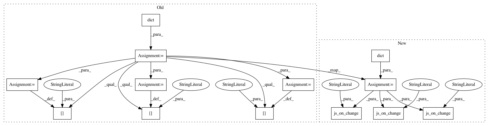

2cdf87a4e997d7792e5ac8494be939a7a4c88cd5,examples/plotting/file/color_sliders.py,,,#,33
Before Change
// the callback function to update the color of the block and associated label text
// NOTE: the JS functions for converting RGB to hex are taken from the excellent answer
// by Tim Down at http://stackoverflow.com/questions/5623838/rgb-to-hex-and-hex-to-rgb
callback = CustomJS(args=dict(source=source), code=
function componentToHex(c) {
var hex = c.toString(16);
return hex.length == 1 ? "0" + hex : hex;
}
function rgbToHex(r, g, b) {
return "//" + componentToHex(r) + componentToHex(g) + componentToHex(b);
}
function toInt(v) {
return v | 0;
}
var data = source.data;
var color = data["color"];
var text_color = data["text_color"];
var R = toInt(red_slider.value);
var G = toInt(green_slider.value);
var B = toInt(blue_slider.value);
color[0] = rgbToHex(R, G, B);
text_color[0] = "//ffffff"
if ((R > 127) || (G > 127) || (B > 127)) {
text_color[0] = "/�"
}
source.change.emit();
)
// create slider tool objects with a callback to control the RGB levels for first plot
SLIDER_ARGS = dict(start=0, end=255, value=255, step=1, callback=callback)
red_slider = Slider(title="R", **SLIDER_ARGS)
callback.args["red_slider"] = red_slider
green_slider = Slider(title="G", **SLIDER_ARGS)
callback.args["green_slider"] = green_slider
blue_slider = Slider(title="B", **SLIDER_ARGS)
callback.args["blue_slider"] = blue_slider
// plot 2: create a color spectrum with a hover-over tool to inspect hex codes
brightness = 0.8 // change to have brighter/darker colors
After Change
// the callback function to update the color of the block and associated label text
// NOTE: the JS functions for converting RGB to hex are taken from the excellent answer
// by Tim Down at http://stackoverflow.com/questions/5623838/rgb-to-hex-and-hex-to-rgb
callback = CustomJS(args=dict(source=source, red=red_slider, blue=blue_slider, green=green_slider), code=
function componentToHex(c) {
var hex = c.toString(16)
return hex.length == 1 ? "0" + hex : hex
}
function rgbToHex(r, g, b) {
return "//" + componentToHex(r) + componentToHex(g) + componentToHex(b)
}
function toInt(v) {
return v | 0
}
const color = source.data["color"]
const text_color = source.data["text_color"]
const R = toInt(red.value)
const G = toInt(green.value)
const B = toInt(blue.value)
color[0] = rgbToHex(R, G, B)
text_color[0] = "//ffffff"
if ((R > 127) || (G > 127) || (B > 127)) {
text_color[0] = "/�"
}
source.change.emit()
)
red_slider.js_on_change("value", callback)
blue_slider.js_on_change("value", callback)
green_slider.js_on_change("value", callback)
// plot 2: create a color spectrum with a hover-over tool to inspect hex codes
brightness = 0.8 // change to have brighter/darker colors
In pattern: SUPERPATTERN
Frequency: 3
Non-data size: 13
Instances
Project Name: bokeh/bokeh
Commit Name: 2cdf87a4e997d7792e5ac8494be939a7a4c88cd5
Time: 2019-05-15
Author: bryan@bokeh.org
File Name: examples/plotting/file/color_sliders.py
Class Name:
Method Name:
Project Name: bokeh/bokeh
Commit Name: 2cdf87a4e997d7792e5ac8494be939a7a4c88cd5
Time: 2019-05-15
Author: bryan@bokeh.org
File Name: examples/plotting/file/slider.py
Class Name:
Method Name:
Project Name: bokeh/bokeh
Commit Name: 2cdf87a4e997d7792e5ac8494be939a7a4c88cd5
Time: 2019-05-15
Author: bryan@bokeh.org
File Name: examples/howto/layouts/dashboard.py
Class Name:
Method Name: slider